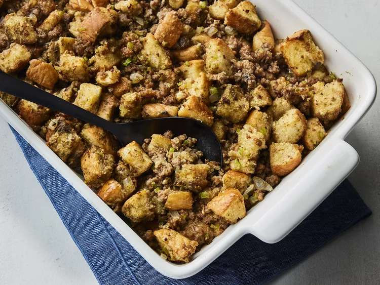
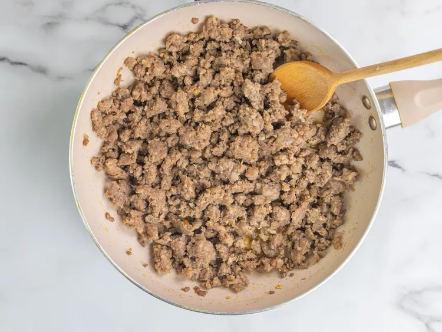
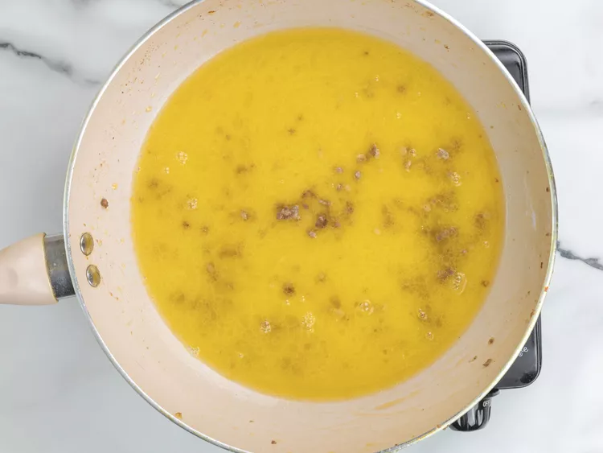
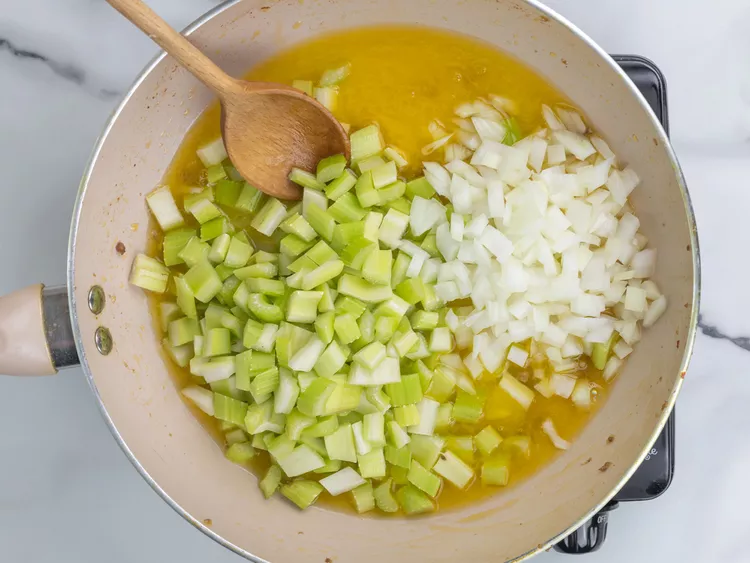
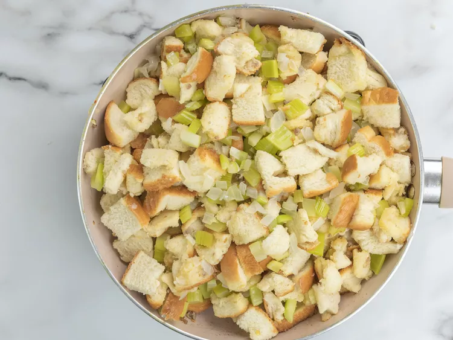
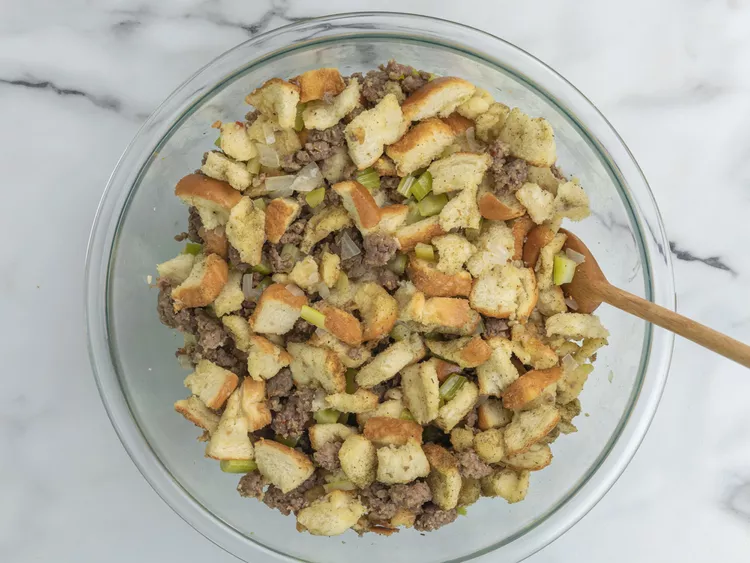

This classic sausage stuffing, packed with bold flavor and made with simple ingredients, will quickly become a holiday tradition.
You don’t need many ingredients to make this sausage stuffing recipe:
You’ll find the full, step-by-step recipe below but here’s a brief overview of what you can expect when you make homemade sausage stuffing:
This sausage stuffing can be used to stuff your turkey (learn how to safely stuff your turkey with our step-by-step guide) or bake it in the oven to serve as a side dish.
Store your leftover sausage stuffing in an airtight container in the refrigerator and use within three days.
“Love, love, love this recipe,” raves Amy. “I like things on the spicy side, so I used hot breakfast sausage. Soooo good.”
“This was delicious,” according to CAcooking. “Finally! A stuffing that is flavorful and not soggy. I used 1.5 baguettes. Removed the crust all around and cut into ¾-1-inch cubes.”
“Just like my grandmother's, but with the sausage,” says Ashley Schwegman. “I added apples and it turned out perfect.”
Heat a large skillet over medium-high heat. Cook sausage until brown and crumbly, 5 to 7 minutes. Transfer to a large bowl with a slotted spoon.

Pour sausage drippings into a measuring cup; add enough butter to equal 1 cup. Pour into the skillet over medium heat.

Sauté celery and onions in butter mixture until onion is tender; do not brown.

Stir in 1/3 of the bread cubes.

Transfer mixture to the bowl with sausage. Add remaining 2/3 bread cubes, poultry seasoning, and pepper; mix well.

Home